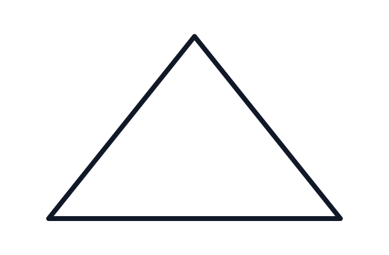

2 Working Toward Wisdom
Introduction to Ethics in Data Science
“Those analysis droids you’ve got over there only focus on symbols. Hagh! I should think you Jedi would have more respect for the difference between knowledge and, hu-hu-hu… wisdom.”
– Dexter Jettster in Attack of the Clones (Lucas 2002, 35)
“Where is the Life we have lost in living? Where is the wisdom we have lost in knowledge? Where is the knowledge we have lost in information?”
– T. S. Eliot in The Rock (Eliot 1934)

This chapter is in-progress.
As one works through the various stages of the data science lifecycle, it is helpful to consider how each stage relates to what is often called the data-information-knowledge-wisdom “hierarchy” or the “DIKW pyramid” for short. As argued by this chapter and other sources, the definitive logical hierarchy implied by the DIKW pyramid is somewhat misleading, however, the intuitions around the pyramid metaphor offer helpful framing for the work of data science.
2.1 What are data?
2.2 What is information?
2.3 What is knowledge?
Knowledge must be appreciated as more than a fixed and static set of facts. To know something is more than just to store some information. It is also more than merely processing information. Zeleny (1987) describes knowledge as a “network of relations through which [humans] coordinate their actions,” adding that “knowledge brings (through language) coherence and coordination to the otherwise turbulent and chaotic world of human action.”
For example, consider what makes Wikipedia a source of knowledge..
2.4 Understanding
TK.
2.5 What is wisdom?
These are some test citations for Ackoff (1989), Vance (1997), Bernstein (2011), Rowley (2007), Frické (2009), and Zeleny (1987).
The data-information-knowledge-wisdom (DIKW) framing is commonly discussed in the literature (e.g., Ackoff (1989); Vance (1997); Bernstein (2011)).
2.6 Case study: statistics worldviews
These statistical frameworks/paradigms are essentialy worldviews that entail specific commitments about uncertainty, evidence, and subjectivity (Romeijn 2025).
2.6.1 Frequentist worldview (long-run behavior)
- Probability as long-run frequency across repeated trials
- Confidence intervals and p-values as procedures with guaranteed long-run error rates
2.6.2 Bayesian worldview (degrees of belief)
- Probability as a measure of uncertainty (belief) given information
- Parameters are treated as uncertain; data update beliefs via Bayes’ rule
2.6.3 Causal inference worldview (effects of interventions)
- Core question: what would happen if we intervened?
- potential outcomes / counterfactuals, causal graphs (DAGs)